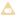

Two lessons ago, an FSM solved decision trees' memory problem by giving each mode its own persistent, script-sized chunk of behavior. That solves memory, but it introduces a new problem of its own: every state needs to know, explicitly, which other states it might transition to. Four or five states is fine. Fifteen states, each with two or three possible transitions to other named states, gets tangled fast, informally called "transition spaghetti." A behavior tree (BT) is a different answer to the same original problem, one built to stay organized as it grows.
Part 1. Tick, and Three Answers
Instead of one state being "active," a behavior tree is a fixed hierarchy of nodes, and every frame the root is ticked. A tick is a function call that flows down through the tree and returns exactly one of three answers back up:
SUCCESS and FAILURE mean exactly what they sound like: this node's job is done, either it worked or it didn't. RUNNING means "still in progress, ask me again next frame" (moving toward a target takes more than one frame; it returns RUNNING on every frame it hasn't arrived yet). Every single node type in a behavior tree, no matter what it does internally, boils down to producing one of these three answers when ticked. That uniform interface is what lets nodes nest inside each other without needing to know anything about what's inside their children.
Root
starts the tick
Composite
has multiple children
Selector
try each 'til one works
Sequencer
all must succeed
Decorator
wraps exactly one child
Succeeder
Upticks SUCCESS no matter what child ticks
Failer
Upticks FAILURE no matter what child ticks
Runner
Upticks RUNNING no matter what child ticks
Inverter
Upticks opposite boolean of child tick
Leaf
No children
Checker
Checks a condition. Returns SUCCESS or FAILURE only.

Flipper
Executes discrete, between-frame logic
Activer
A continuously running action
Every icon above is a bt-node. Here they are as a family tree.
The node hierarchy. Root starts the tick, composites have many children, decorators wrap one, leaves have none.
Part 2. Leaves: Checkers, Flippers, and Activers
Every leaf node (no children of its own) is a Checker, a Flipper, or an Activer. A Checker asks a yes/no question (SUCCESS or FAILURE, nothing else). A Flipper does one quick thing between frames. An Activer keeps doing something across frames and answers RUNNING until it's done. In the project's code that's two base classes, Condition (Checkers) and Action (Flippers and Activers), and the only difference between them is what they default to before you override tick(), a small but deliberate detail:
An Action (Flipper or Activer) assumes success unless something goes wrong; a Condition (Checker) assumes failure unless it can prove otherwise. Here's a real Checker from the demo project, one that checks the in-game clock:
bt_node_leaf_cond_day.gdGDScript
extends BehaviorTree_Node_Leaf_Condition
class_name BehaviorTree_Node_Leaf_Condition_Day
var ang_in = Global.npc_day_ang_in
var ang_out = Global.npc_day_ang_out
func tick(_actor, _blackboard, _delta):
var time_angle = Global.time_to_angle
if (
time_angle < ang_in ||
time_angle > ang_out
):
return SUCCESS
return FAILURE
Part 3. Composites: Selector and Sequencer
A leaf can only ever answer for itself. A composite node has multiple children and combines their answers into one of its own. This project has two:
bt_node_comp_sequencer.gdGDScript
extends BehaviorTree_Node_Composite
class_name BehaviorTree_Node_Composite_Sequencer
func tick(actor, blackboard, delta):
for c in get_children():
if c.has_method("tick"):
var response = c.tick(actor, blackboard, delta)
if response == SUCCESS:
pass
elif response in [FAILURE, RUNNING]:
return response
else:
return FAILURE
return SUCCESS
A Sequencer ticks its children left to right and stops the instant one doesn't SUCCESS: a failure or a still-running child short-circuits the whole thing, passing that same result straight up. Only if every child succeeds does the Sequencer itself report SUCCESS. Read it as "and": do this, and this, and this, all the way through, or bail out the moment one fails.
bt_node_comp_selector.gdGDScript
extends BehaviorTree_Node_Composite
class_name BehaviorTree_Node_Composite_Selector
func tick(actor, blackboard, delta):
for c in get_children():
if c.has_method("tick"):
var response = c.tick(actor, blackboard, delta)
if response != FAILURE:
return response
return FAILURE
A Selector is the opposite: it ticks its children left to right and stops the instant one doesn'tFAILURE. Read it as "or": try this, or this, or this, taking the first option that isn't a dead end, only reporting FAILURE itself if every single child did. Order matters a lot here: children earlier in the list get first refusal.
Part 4. A Real Tree, Read End to End
This is the actual behavior tree driving the day/night creature in the demo project (no code beyond what's already shown, just how the nodes are nested). Leaves get a small gold symbol under their standard icon showing what that leaf checks or does:
A standard Checker (left), then extended leaves. Same shape and carve-out, plus a gold symbol below: a sun for daylight, a pin for a move target, an arrow for moving.
The Gatherer's actual tree. Left branch: a Sequencer checking daylight, then setting fruit as the target, then moving to it (three "and"s -- any failure falls through to the right branch). Right branch: an Inverter flips the same daylight Checker into "is it night," then the target is set to shelter and the creature moves there. The Selector at the root picks whichever branch didn't fail.
Read it top to bottom: the root Selector tries the left Sequencer first. If it's daytime and grass is found and the creature successfully starts moving toward it, that whole Sequencer reports success (or RUNNING while still en route), the Selector stops there, and the right branch never even gets ticked this frame. Only if the left Sequencer fails, which happens the instant the daylight Checker fails at night, does the Selector move on and try the shelter branch instead.
Notice there's no explicit "go to shelter" state anywhere, and nothing that looks like a transition. The tree's shape encodes the priority (try grass first, shelter second) once, structurally, rather than as a rule living inside some other state.
Part 5. Try It
In the demo project, find the actual "BT Gatherer" scene and locate its Selector's two Sequencer children in the scene tree. Match each node you see there to an icon in the diagram above.
Swap the order of the two Sequencer children under the root Selector (drag one above the other). Nothing about any script changes. Predict what changes in the creature's behavior, then run it and check.
bt_node_leaf_act_print_running.gd is an Activer that always returns RUNNING and prints a timestamp. Temporarily drop one into a Sequencer ahead of an existing Activer and watch the console; confirm for yourself that a RUNNING result stops that Sequencer right there, same as a FAILURE would, just without reporting failure.
Checkpoint
Before moving on, make sure you can:
Name the three possible results of a tick, and explain what each one means in one sentence.
Explain the default return value difference between Condition leaves (Checkers) and Action leaves (Flippers and Activers), and why that default makes sense for each.
Explain Sequencer and Selector's stopping rules in plain English ("and" / "or"), without reading the code back.
Given the Gatherer's actual tree, say out loud what happens on a tick where it's night and no shelter exists nearby: what does each node along the way return, and what does the root ultimately report?
Point to one specific way this tree avoids the "transition spaghetti" problem an FSM with the same behavior would risk.
Exercises
Build on the lesson project. Scene trees below are suggested; reuse existing nodes and packed scenes where possible.
Warm-up
Build a tree that patrols until the player enters detection range. Agent → BehaviorTree → Selector/Sequence → checker, flipper and activer leaves; detection uses Area2D + CollisionShape2D.
Test one normal case and one edge case; record the expected behavior.
Intermediate
Add approach-then-interact behavior with RUNNING status across frames. Add checker/flipper/activer nodes under the existing tree and test target movement.
Test one normal case and one edge case; record the expected behavior.
Advanced
Switch off the chase branch with a Failer, make one step optional with a Succeeder, and confirm the tree falls back to patrol. Each decorator takes exactly one child; test with the Failer in and out.
Test one normal case and one edge case; record the expected behavior.